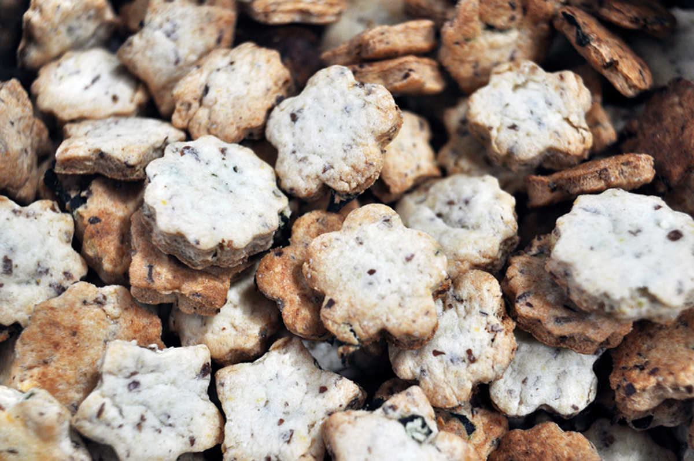

wakame bites
30 small cookies — 50 minutes
Seaweed bites, a great snack packed with your a good dose of iodine - necessary for good health. These are highly addictive and sweet — beware.
I went all out this time, and used my fancy cookie cutters, but most times I just cut the sheets of dough into small squares with a regular knife. Using cookie cutters is longer, because I want to use every bit of the dough and that means re-using the bits around the cut outs.
The cookies were adapted from a recipe by Kiuchi Yuki-san
 flax seeds 15g, ground
flax seeds 15g, ground all purpose flour 90g
all purpose flour 90g cornstarch 20g
cornstarch 20g coconut sugar 75g
coconut sugar 75g canola oil 90ml
canola oil 90ml wakame 10g
wakame 10g
cookies
- Mix 15g (1 tbsp) of ground flax seeds with 45 ml (3 tbsp) of water. Let it sit until it thickens.
- In a bowl, mix 90g (3/4 cup) of flour with 20g (4 tsp) of cornstarch.
- In a separate bowl, cream 75g (5 tbsp) of coconut sugar with 90ml (6 tbsp) of canola oil. Stir in the flax seeds and water mix. Put the wet ingredients with the dry ones.
- , add 10g (2 tsp) of shredded wakame and mix well.
- Form into a ball, put it in a bowl with a cover and stick it in the fridge for approximately 20 minutes.
- Preheat your oven to 175°C (350°F). After the 20 minutes is up, take the dough out of the fridge and flatten it into a rectangle with a rolling pin to a thickness of about 1/2 cm. Cut into whatever shape you want! I had small flower-shaped cookie cutters so i used that, you can cut the dough into squares with a knife.
- Prepare a baking sheet lined with a baking mat, bake for about 15 minutes until they brown on top.
- Place on a cooling rack and enjoy!